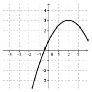
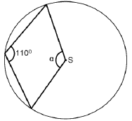
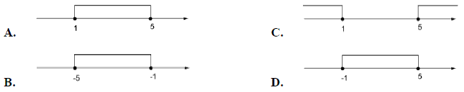
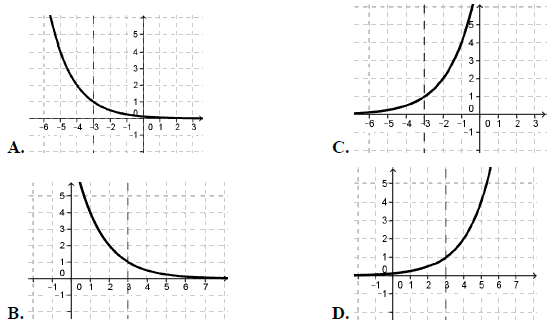
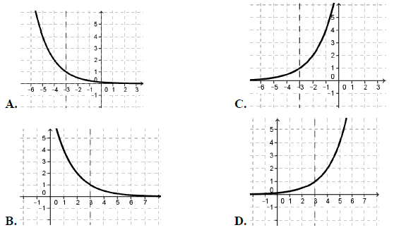

Matura 2013 luty
Wskaż liczbę, której \(0{,}4\%\) jest równe \(12\).
A.\( 0{,}048 \)
B.\( 0{,}48 \)
C.\( 30 \)
D.\( 3000 \)
D
Dane są wielomiany \(W(x)=-3x^3-5x^2+x\) oraz \(V(x)=x^3+2x^2-6x+1\).
Wówczas wielomian \(P(x)=-2W(x)-V(x)\) jest równy:
Wówczas wielomian \(P(x)=-2W(x)-V(x)\) jest równy:
A.\( P(x)=5x^3+12x^2-8x+1 \)
B.\( P(x)=-5x^3-12x^2+8x-1 \)
C.\( P(x)=5x^3+8x^2+4x-1 \)
D.\( P(x)=-7x^3-8x^2-4x+1 \)
C
Zbiorem wartości funkcji, której wykres przedstawiono na rysunku jest
przedział:

A.\( \langle -4,5 \rangle \)
B.\( \langle -3,4 \rangle \)
C.\( \langle -2,4 \rangle \)
D.\( \langle -3,2 \rangle \)
B
Który wyraz ciągu \( a_n=-\frac{7}{3}n+21\) jest równy zero?
A.\( a_9 \)
B.\( a_{18} \)
C.\( a_{21} \)
D.\( a_{49} \)
A
Przyprostokątne trójkąta prostokątnego mają długości \(3\) i \(9\). Sinus
najmniejszego kąta tego trójkąta jest równy:
A.\( \frac{3\sqrt{10}}{10} \)
B.\( \frac{1}{3} \)
C.\( \frac{\sqrt{10}}{10} \)
D.\( \frac{\sqrt{10}}{30} \)
C
Wzorem funkcji kwadratowej \(f\), której fragment wykresu przedstawiono na rysunku
jest: 
A.\( f(x)=-\frac{1}{2}x^2+2x-1 \)
B.\( f(x)=-\frac{1}{2}x^2+2x+1 \)
C.\( f(x)=-\frac{1}{2}x^2+x+1 \)
D.\( f(x)=-\frac{1}{2}x^2-2x+1 \)
B
Wyrażenie \(\sqrt[3]{9}\cdot \sqrt[5]{27}\) zapisane w postaci potęgi liczby \(3\)
jest równe:
A.\( 3^{\frac{2}{5}} \)
B.\( 3^{\frac{5}{8}} \)
C.\( 3^{\frac{19}{15}} \)
D.\( 3^{\frac{8}{5}} \)
C
Interpretację geometryczną układu równań \[\begin{cases} x-y=2\\ -2x+2y=4
\end{cases} \] przedstawiono na rysunku: 
C
Wielomian \(W(x)=x^3-5x^2-3x+15\) rozłożony na czynniki
ma postać
A.\( W(x)=(x-3)(x+3)(x-5) \)
B.\( W(x)=(x-5)(x+5)(x^2-3) \)
C.\( W(x)=(x-5)(x-5)(x^2-3) \)
D.\( W(x)=(x-\sqrt{3})(x+\sqrt{3})(x-5) \)
D
W loterii liczbowej wylosowano dziesięć liczb: \(4, 3, 3, 3, 4,
6, 1, 5, 1, 6\). Mediana tych danych jest równa:
A.\( 5 \)
B.\( 3{,}6 \)
C.\( 3{,}5 \)
D.\( 3 \)
C
Punkt \(S\) jest środkiem koła. Zatem miara kąta \(\alpha \) jest równa (patrz na
rysunek): 
A.\( 70^\circ \)
B.\( 220^\circ \)
C.\( 140^\circ \)
D.\( 250^\circ \)
C
Prostymi równoległymi są wykresy funkcji liniowych:
A.\( y=\frac{4}{3}x+5\ \) i \(\ y=-\frac{3}{4}x+5\)
B.\( y=\frac{4}{3}x+5\ \) i \(\ y=-\frac{4}{3}x+5\)
C.\( y=\frac{4}{3}x+5\ \) i \(\ y=\frac{3}{4}x-5\)
D.\( y=\frac{4}{3}x+5\ \) i \(\ y=\frac{4}{3}x-5\)
D
Liczba \(-\frac{3}{2}\log 4+\frac{5}{3}\log 8\) jest
równa:
A.\( 2\log 2 \)
B.\( \log 24 \)
C.\( 2 \)
D.\( 8\log 2 \)
A
Dziedziną funkcji \(f(x)=\frac{x^2-16}{(x-2)(x+4)}\) jest
zbiór:
A.\( \mathbb{R} \backslash \{ -2,4 \} \)
B.\( \mathbb{R} \backslash \{ 2,-4 \} \)
C.\( \mathbb{R} \backslash \{ -4,4 \} \)
D.\( \mathbb{R} \backslash \{ 2 \} \)
B
Zbiór rozwiązań nierówności \(|x-3|\le 2\) przedstawiony jest na rysunku: 
A
Rozwiązaniami równania \(\frac{(x^2-4)(x-3)}{(x-2)(x+3)}=0\) są liczby:
A.\( -3;\ -2;\ 2;\ 3 \)
B.\( 2;\ 3 \)
C.\( -3;\ 2 \)
D.\( -2;\ 3 \)
D
Kąt \(\alpha \) nachylenia ściany bocznej ostrosłupa prawidłowego czworokątnego do
płaszczyzny podstawy zaznaczony jest na rysunku: 
C
Do wykresu funkcji liniowej \(f\) należą punkty \(A = (4, -3)\) i \(B = (-1, -13)\). Funkcja \(f\) opisana jest wzorem:
A.\( f(x)=2x-11 \)
B.\( f(x)=2x+11 \)
C.\( f(x)=\frac{1}{2}x+1 \)
D.\( f(x)=\frac{1}{2}x-5 \)
A
Ciągiem arytmetycznym jest ciąg o wyrazie ogólnym \(a_n\) równym:
A.\( a_n=3\cdot 2^n \)
B.\( a_n=\frac{4n^2-9}{3+2n} \)
C.\( a_n=\frac{2n+3}{n+2} \)
D.\( a_n=\frac{n^2+1}{3} \)
B
Wartość wyrażenia \(\sin^{2} 23^\circ +\sin^{2} 67^\circ \) jest równa:
A.\( 2\sin^{2} 23^\circ \)
B.\( 2\sin^{2} 67^\circ \)
C.\( 1 \)
D.\( 0 \)
C
Wszystkich liczb trzycyfrowych parzystych, których cyfra jedności należy do zbioru
\(A=\{2, 4, 5, 7\}\), cyfra dziesiątek do zbioru \(B = \{6, 7, 8\}\), a cyfra setek do zbioru \(C = \{2, 4, 5, 6\}\) jest:
A.\( 48 \)
B.\( 36 \)
C.\( 24 \)
D.\( 12 \)
C
Wykres funkcji \(f(x)=2^{x-3}\) przedstawiony jest na rysunku:


D
Dany jest okrąg o równaniu \((x+3)^2+(y-4)^2=25\) . Środkiem \(S\) tego okręgu jest
punkt:
A.\( S=(-3,-4) \)
B.\( S=(3,4) \)
C.\( S=(3,-4) \)
D.\( S=(-3,4) \)
D
W trapezie miary kątów ostrych są równe \(30^\circ \) i \(60^\circ \). Wówczas
stosunek długości krótszego ramienia do dłuższego jest równy:
A.\( \frac{\sqrt{3}}{3} \)
B.\( \frac{1}{3} \)
C.\( \frac{\sqrt{2}}{2} \)
D.\( \frac{1}{2} \)
A
Największa wartość funkcji \(y=-2x^2+x+1\) w przedziale
\(\langle -1;\ 0{,}5 \rangle\) jest równa:
A.\( 1\frac{1}{8} \)
B.\( 1 \)
C.\( \frac{1}{4} \)
D.\( -4 \)
A
Rozwiąż nierówność: \(-x^2+2x+8\ge 0\).
\(x\in \langle -2,4\rangle \)
Na boku \(DC\) kwadratu \(ABCD\) obrano punkt \(K\) tak, że \(|DK| = |KC|\) (rys.).
Przekątna \(AC\) kwadratu przecina odcinek \(BK\) w punkcie \(P\). Uzasadnij, że pole trójkąta
\(ABP\) jest czterokrotnie większe niż pole trójkąta \(KCP\). 
Oblicz pierwszy wyraz i iloraz ciągu geometrycznego wiedząc, że trzeci wyraz jest
równy \(18\), a szósty \(486\).
\(a_1=2\), \(q=3\)
Wykaż, że liczby \(a=\frac{-5}{2\sqrt{2}+3}\) oraz \(b=|10\sqrt{2}-15|\) są liczbami przeciwnymi.
W trójkącie równoramiennym \(ABC\) o podstawie \(AB\) poprowadzono wysokość z
wierzchołka \(C\). Wyznacz równanie prostej zawierającej tę wysokość, jeśli \(A = (2, 8)\), \(B =
(-2, 4)\).
\(y=-x+6\)
Ze zbioru liczb \(\{1, 2, 3, 4, 5\}\) losujemy kolejno trzy razy po jednej liczbie
bez zwracania tworząc liczbę trzycyfrową. Oblicz prawdopodobieństwo zdarzenia \(A\) – otrzymana
liczba jest mniejsza od \(432\).
\(P(A)=\frac{43}{60}\)
Z miast \(A\) i \(B\) odległych o \(330 \) km wyjechały naprzeciwko siebie dwa
samochody. Samochód jadący z miasta \(A\) wyjechał \(20\) minut wcześniej i jechał z prędkością o
\(9\) km/h mniejszą niż samochód jadący z miasta \(B\). Samochody te minęły się w odległości \(168\)
km licząc od miasta \(A\). Oblicz średnią prędkość każdego z samochodów.
\(v_1=72\) km/h, \(v_2=81\) km/h
Oblicz pole i obwód rombu \(ABCD\) wiedząc, że przekątna \(AC\) jest zawarta w
prostej o równaniu \(y=2x-2\) oraz \(A=(-1,-4)\) i \(D=(-6,6)\).
\(O = 20\sqrt{5} \), \(P=120\)
Metalowy stożek, którego tworząca o długości \(10\) jest nachylona do płaszczyzny
podstawy pod kątem \(30^\circ \), przetopiono na sześć jednakowych kulek. Oblicz promień kulki.
\(r=\frac{5}{2}\)